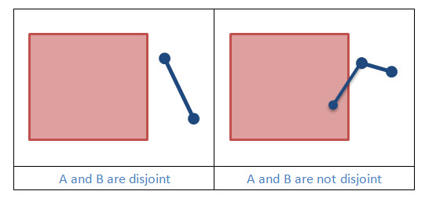

Two geometries are disjoint if they don’t have any points in common. Disjoint is the inverse of Intersects. Disjoint is the most efficient operator and is guaranteed to work even on non-simple geometries.
|  |
Example 1: Is Geometry A disjoint from Geometry B?
static boolean geometryIsDisjoint(Geometry geometryA, Geometry geometryB, SpatialReference sr)
{
boolean isDisjoint = OperatorDisjoint.local().execute(geometryA, geometryB, sr, null);
return isDisjoint;
}